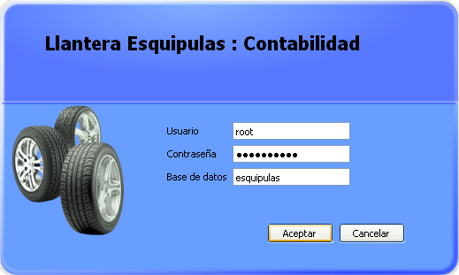
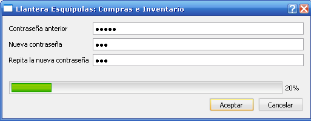

MIS Esquipulas Detalles Generales
Este apartado explica un poco el menu "Opciones" que aparece en todos los modulos del sistema
-
En el menu de opciones, tenemos los siguientes botones:
- Iniciar Sesión Ingresar al sistema con sus credenciales y permisos correspondientes
- Cambiar Contraseña Permite cambiar la contraseña del usuario actual
- Ayuda Muestra el contenido de la ayuda segun el modulo correspondiente
- Acerca de Breves comentarios sobre la aplicación
- Cerrar sesión Bloquea la sesió actual para evitar que personas no autorizadas manipulen el sistema, cabe mencionar que la transaccion y documento abierto no se cierra, y al iniciar sesión nuevamente podra continuar.
Iniciar Sesión
Al momento de iniciar Sesión debe escribir su usuario y contraseña< correctamente, respetando mayusculas y minusculas en ambos casos, ademas debe ingresar el nombre de la configuracion de la Base de datos a utilizar, una vez hecho esto presione aceptar para ingresar o cancelar para salir.
Iniciar sesión
Cambiar Contraseña
Para cambiar su contraseña debe rellenar los datos que puede observar en la imagen, es muy importante tomar en cuenta el porcentaje de fortaleza de su contraseñ para evitar inclusiones no autorizadas al sistema.
Cambiar Contraseña